点击上方蓝字 ，与您分享双胞胎育儿经！
文|圆圈妈，一个文思如尿崩的双胎妈妈
双十一还没来，我就收到双十二的商家报名活动，淘宝这效率是有多高啊。
正好提醒了我，双十二买买买的模式即将开启了。
之前孖仔帮公号在双十一的前夕写了些关于双胞胎宝宝的囤货和婴儿车婴儿床的选购攻略，至今觉得意犹未尽。
今天继续…扒一扒那些不为人知的双胞胎育儿神器。
双胞胎专用背带（腰凳）
光看图片就觉得好拉风啊，有木有！？
前一个，后一个，非常适合人手不足的情况下使用。
圆圈还不满3个月，我就提早用上腰凳了，买的是GB的坐垫式前置款腰凳，与圆圈爸一人背一个去附近的超市闲逛。
当时他们还软趴趴的，头都竖不起来，只能拆掉背带保留坐垫，双手斜抱着他们。
有时候我的剖腹产伤口会疼痛，腰凳绑在腰间久了会觉得酸胀难受，伤口也很敏感，稍一摩擦就会红肿一片。
圆圈爸只能把一个宝塞进腰凳，另一个宝抱住，我要是有啥其他需要，他就爱莫能助了，除非他真的有三头六臂。
当时就在想，要是圆圈爸能一人抱两只还能空出双手拎东西，该多好啊！
这种双人座腰凳就解决了这个问题。可以双人背又很可自由拆卸成单人款，随意组合，真的很人性化啊！
爸爸背着两只娃，妈妈拿行李，爸爸累了，可以换妈妈背。
还有其他款式，如下图所示。
▲这种背带还能一起抱着喂奶哦▲
▲这种背带还能一起抱着喂奶哦▲
▲这种背带最适合缺乏安全感的宝宝们，模拟袋鼠式的怀抱，让两宝宝倍感安全，舒适。▲
以上这几款双胞胎宝宝专属腰凳都有异曲同工之妙，但有一点比较鸡肋，两宝宝大了就要面临一个承重问题。
哪怕是身上有8块腹肌的宝爸也很难同时负重两个宝宝一直前行，估计适用年龄最多6个月内。
双胞胎专用哺乳枕
双胞胎宝宝的口粮问题是养育双胞胎的一大世纪难题，而如何喂奶就已经让众多双胎妈妈哭晕在厕所里。
孕期群的双胎准妈妈好奇两宝宝如何同时喂奶，喂养群的双胎辣妈纠结两宝宝怎么喂奶才舒服。
而圆圈妈，一个没有喂过母乳的“假妈妈”则表示，爱莫能助。
在此致敬坚持在母乳路上不放弃的双胎妈妈，今天安利一款双胞胎妈妈专用哺乳枕。
看图：真的超赞噢！
若是三年前给我知道有这玩意儿，我一定下决心喂母乳。
来看看，功能还挺多的哦。
两宝宝可以躺上面睡觉，睡醒了还可以在上面玩。
而最大用处就是可以同时给两孩子喂奶。
宝宝斜躺在上面舒服地喝奶，妈妈也可以靠在枕头上，护住后背和腰部，悠哉地喂奶，还能空出双手看手机刷朋友圈。
不管是同时亲喂还是配方奶，均可以做到。简直两全其美，妙不可言！
一次性奶粉袋
这是孖仔帮喂养群一位宝妈分享的，看到奶粉袋的那一刻，我真的好激动啊！
终于有一样神器腾空出世让我有骨气地对奶粉盒大声SAY NO！
我对奶粉盒真的是又爱又恨，可是我又不得不用！
不得不承认，奶粉盒某种程度上，也是神器一只，至少每次带着圆圈出行，我不用背着整个奶粉罐出门，而奶粉盒堪称“行走中的迷你奶粉罐”。
但我依然觉得使用奶粉盒很麻烦。
每次圆圈出门就跟搬家似的张罗很多东西，奶粉盒是必备，要经历清洗，晾干，装奶粉这三个过程。而我则希望精简程序，越简单越好。
除此之外，回来之后还要把奶粉盒清洗晾干，带着俩娃出去玩，已经累得够呛了，回来还有一大推破事要善后。
PLS，真的不是跟我有仇的吗？
其实有好几次都忘记清洗，乃至下次使用的时候，奶粉盒已经发霉了，我真想干脆抱着奶粉罐出门算了。
没买奶粉盒之前，我用的是一次性保鲜袋子，可是使用的时候，不能快速倾倒出奶粉。
那时候就在想，苍天啊，请赐我一个省事省力又省心，关键是用一次丢一次不心疼的奶粉盒。
因此，当我看到这个奶粉袋的时候，就有种找到知音的感觉，只需要计算好分量，随时抠兑即可。
老娘再也不用伺候那些瓶瓶罐罐了，只要往袋子里装好每吨奶的分量，放在妈咪包，小巧不占空间又便携，需要时就拿出来即兑即冲，用完后就丢掉。超赞啊！
双胞胎专用喂奶支架
这个喂奶支架也是准备双十一的囤货攻略时不经意间发现的，我马上对这款喂奶支架一见倾心。
这才是解放双手的压轴神器啊！
圆圈3个月之前，我觉得每天做的最多的事情就是喂奶，不停地喂奶。
因为他们吃奶不同步，圆圆吃完后，轮到圈圈吃，圈圈吃得慢，终于吃完了，圆圆已经饿了吵着要吃下一顿。
起初，人手充足，标配了两个大人专门喂奶，但是只有圆圈爷爷奶奶两人带的时候就累得够呛了，伺候他们吃好喝好后，大人却没有时间做饭菜，经常是折腾到下午三四点钟才能吃上中饭。
当时就想，要是有个工具把奶瓶固定住，一人看着，另一人去做饭菜该多好啊！
今日一见这个神器，真的有点相见恨晚啊！
小贴士：虽然可以解放双手，但是小婴儿喝奶容易呛奶，仍然需要大人在边上看着，喝完要抱起来拍嗝。
不建议新生儿用，尤其是双胞胎早产儿。早产儿通常有喂养困难，溢奶，呛奶，甚至从鼻子里喷奶出来，应该等两宝宝至少满6个月后才放心使用。
双胞胎宝宝专用辅食勺子
在整理双胞胎宝宝的用品囤货清单时，无意中看到的一款育儿神器。
我被这款神器惊艳到了，哪个天才居然把我想象的东西设计出来了！
这个双胞胎宝宝专用辅食勺子是Y型的，一个手柄两个勺子，配2个相连的碗。
你知道给两宝宝喂辅食容易犯什么常规错误吗？
一个宝宝喂了多次，另一个宝宝还一口都没吃，而你居然全然不知。
圆圈6个月的时候才正式添加辅食，他们的咀嚼能力其实早已可以胜任辅食的添加。
当我用勺子给他们喂迷糊时，他们吃得很HAPPY。
有时候，他们饿得慌或者遇到好吃的辅食，就像一窝小麻雀等着妈妈喂食似的，争先恐后地长开嘴巴嚷嚷要吃。
我先喂哪个都罪过，只好双手并用，两只勺子齐上阵，还不能中途走开，因为很容易搞晕，当再次喂他们的时候：“请问…老母亲我刚才喂到哪一只了？”
这个勺子，真的是神一样的存在，设计这个勺子的人估计也是个双胞胎妈妈，而且也曾如我那般狼狈过。
一次就能喂两个，两宝宝不用争不用抢，我也不罪过，谁吃了谁没吃，一目了然，心里有数。
重点是，即便其中有一个生病了，也可以一起喂食，因为是勺子和餐盘是单独的，分开的，完全不影响，不用担心交叉感染，减少了病毒细菌的传播。
太赞了…我忍不住笑出声来！
婴儿护理计时器（亲子育儿APP）
国外一宝妈总结了10款送给双胞胎宝宝的礼物，其中就提到这个婴儿护理计时器，如图所示：
这真的是专为同时有两个新生儿的家庭独家打造的育儿神器。
一孩家庭不需要哈！
根据亚马逊的商品描述，这个计时器可以简单快速地记录到两宝宝的喂养细节。
看按键有三个模式，换尿布，喝奶和睡觉，甚至更多功能。
尤其是晚上睡眼惺忪摸不着灯的时候，按一下按钮就可以记录了，方便不同照料人随时了解到两宝宝的喂养护理情况。
双胞胎的实际育儿会非常焦头烂额，经常搞不清谁吃了奶，几点吃的，吃了多少。
圆圈爷爷奶奶记性不好，有时候会用纸笔记录下来，但有时候他们太忙太累了，来不及记录。
这个神器就是这样诞生的，只需要做个设置就可以轻松记录下来，让我和圆圈爸清楚圆圈兄弟几点吃了奶，几点睡了，睡了多久…
要是二胎再来一对双胞胎，我一定买一个回来试试，亲自体验下是神器还是鸡肋。
跟这个原理差不多的还有一些育儿APP，如亲宝宝，宝宝生活记录。
这也是孖仔帮喂养群的一宝妈推荐的，大家可以下载了解下。
最后，说到双胞胎育儿神器当然少不了这个大BOSS 啦！
没错，只要有这个神器存在，其他的都是浮云！
TA就是宝爸！
不详细说了，丢给你一个眼神慢慢体会哈！
各位机智如你的双胎爸爸妈妈，你们还使用过哪些双胎育儿神器呢？留言分享下呗！
孖仔帮有双胞胎爸爸专属群啦！
在此你们可以互相交流下初为人父的喜悦和已为人父的辛酸，还有你们男人间的家长里短…尽情唠嗑吧！
入群方式：＋圆圈妈的微信(sgguy-com)，我会发群聊邀请给你们。欢迎准爸爸的加入双胞胎育儿大家庭，一起分享双胞胎育儿经。
#重磅互动#
评论区聊一聊
你希望圆圈妈写什么干货？
随便提，万一下篇就写了呢？
END
本文系圆圈妈sgguy-com原创，来源于孖仔帮，专注双胞胎孕期育儿经验分享，著作权归孖仔帮所有。
212:原来双胎妈妈可以这样数胎动，好简单啊
215:双胎子宫日记系列|（下）你看不看？双胞胎妈妈直播剖腹产全过程
302:喂养干货||如何训练双胞胎宝宝睡整夜觉
306: 真人示范！双胞胎妈妈高难度喂母乳技巧
219双胞胎准爸爸的生存指南：不做猪一样的队友，活着出来喜当爹
220双胞胎准妈妈，其实你的产检方式一直搞错了…
222:看过这份最简单的双胞胎宝宝用品囤货清单，其他的都是将就
712：双十一囤货：我为什么不买并排式的双胞胎婴儿车，这篇文章有答案
304:家有双胞胎宝宝，这6个小贴士越早知道越好
305:双胞胎宝宝怎么睡？这样做既省钱又安全
303:干货||配方奶喂养的双胞胎宝宝囤货用品清单
309: 如何顺利度过双胞胎宝宝的第一年
710:双胎妈妈囤货建议||这6个育儿神器，吃土也要买
我猜你肯定喜欢看上面的文章，对不对嘛？关注孖仔帮，回复文章前面的数字编号即可阅读。
关于这个号
谢谢关注！我是圆圈妈
85后，全职双胎妈妈
家有孖仔男宝两枚，圆圈&圈圈
双胞胎育儿公众号：孖仔帮
旨意分享双胞胎育儿经验帮助双胞胎家庭
有经验可循
有组织可靠
希望我的经验对您有所启发
期待与您一起共享双胞胎育儿经
孖仔帮目前有4个微信社群
孕期群，喂养群，闲置群，双胞胎爸爸专属群，
如需入交流群，请+圆圈妈的微信号sgguy-com,或扫描下方二维码
由圆圈妈邀请入群
更多孖仔帮双胞胎原创育儿文章请猛戳 "阅读原文" 或者直接上圆圈妈的个人博客。
博客链接：https://www.sgguy.com/twinsbang
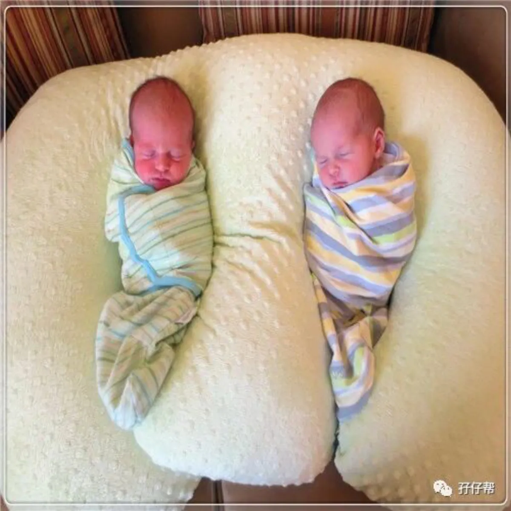


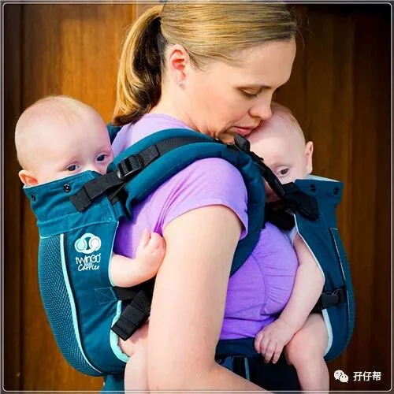
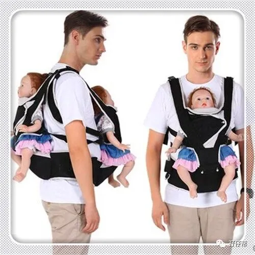
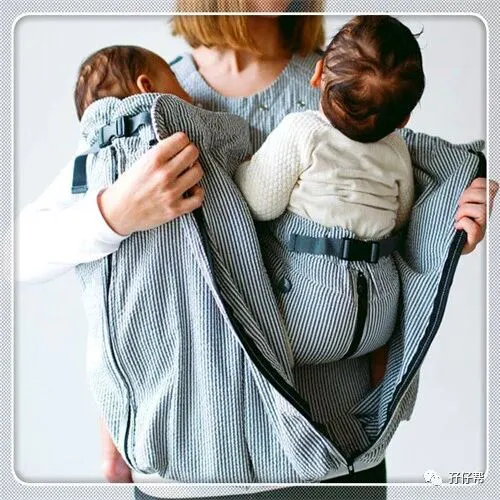
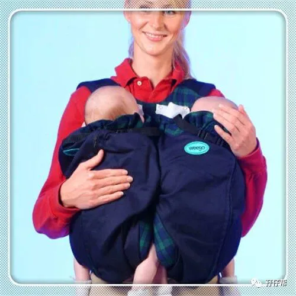
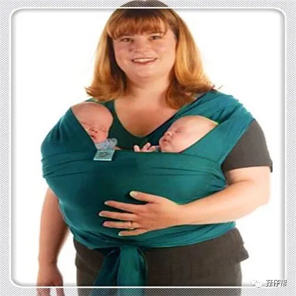
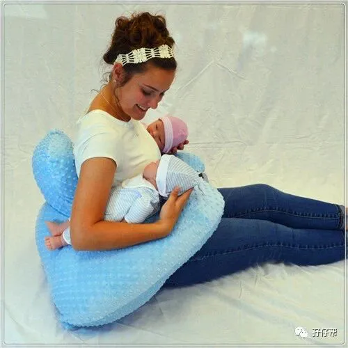
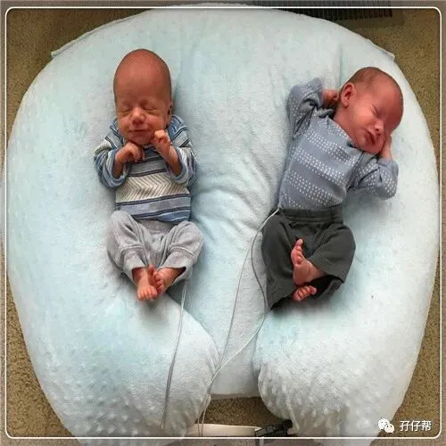
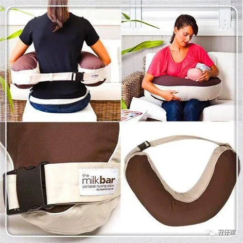
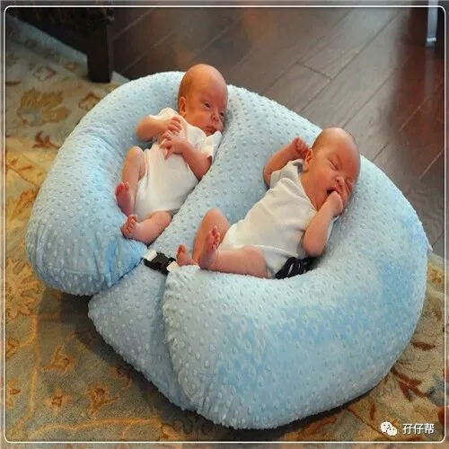
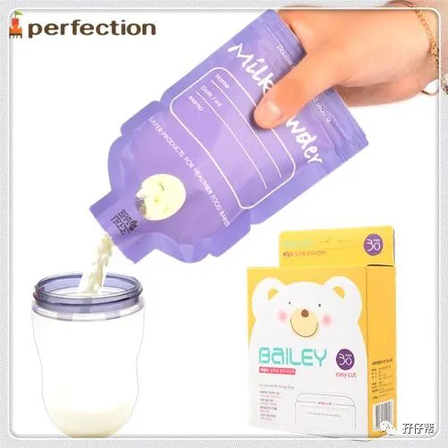
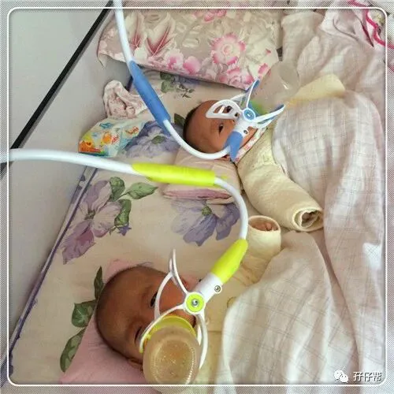
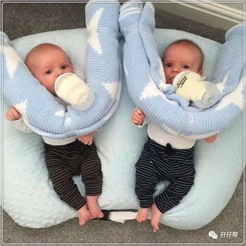
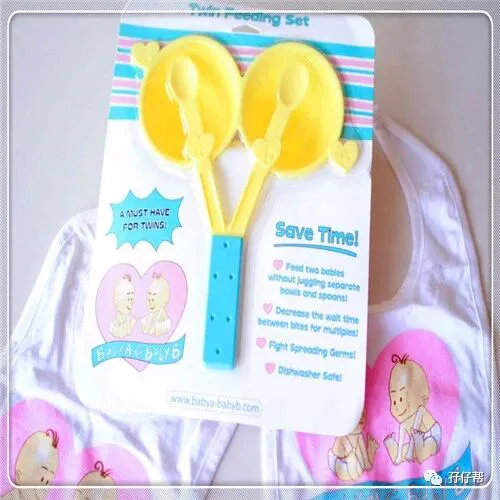
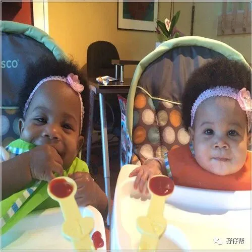
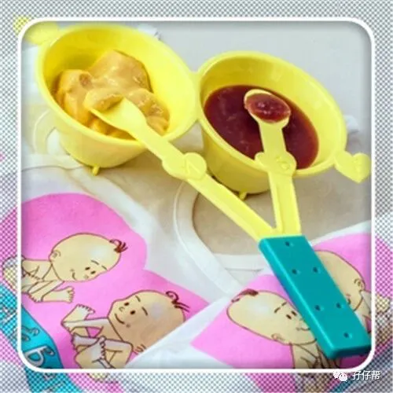
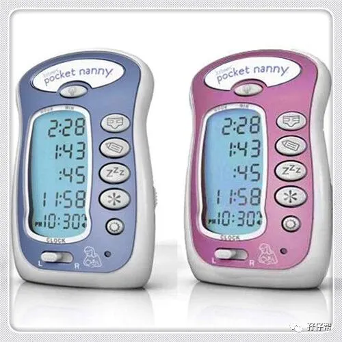
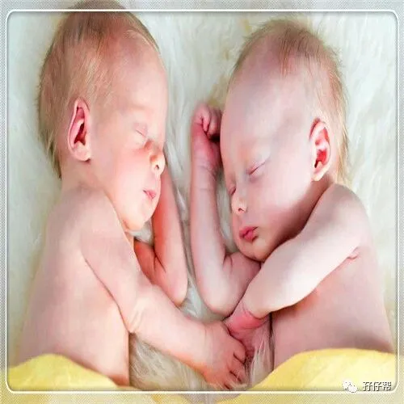